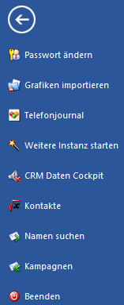

Im Bereich "CWL" stehen wichtige Grundfunktionen zur Verfügung:
Ø Zurück
Durch Anwahl des Buttons "Zurück" wird der Bereich "CWL" verlassen und in die WinLine zurückgekehrt.
Ø Passwort ändern
Durch Anwahl dieses Buttons das Passwort für den Login-Vorgang geändert werden.
Ø Grafiken importieren
Mit Hilfe dieses Buttons können alle Grafiken verwaltet werden, die in der WinLine und in der WEB Edition verwendet werden.
Ø Telefonjournal
Nach Anwahl des Buttons "Telefonjournal" wird eine Übersicht der Telefonanrufe ausgegeben.
Ø Weitere Instanz starten
Mit Hilfe dieses Buttons kann das Programm ein weiteres Mal gestartet werden, wobei von der WinLine automatisch ein temporärer Benutzer angelegt wird.
Ø CRM Daten Cockpit
Das CRM Daten Cockpit bietet eine Zusammenstellung der verschiedensten Auswertungen, welche im WinLine LIST angelegt wurden.
Ø Kontakte
Durch Anwahl dieses Buttons wird der Kontaktestamm geöffnet. Hier können all jene Adressen, für welche die WinLine keinen extra Stammdatenbereich vorsieht, aber in WinLine gespeichert werden sollen, verwaltet werden.
Ø Namen suchen
Da es in WinLine die unterschiedlichsten Datenbereiche, wie Personenkonten, Interessenten, Ansprechpartner, Kontaktadressen, Arbeitnehmer und Vertreter gibt, gestaltet sich die Suche nach dem richtigen Datensatz unter Umständen recht schwierig. Damit nicht alle Stammdatenbereiche extra durchsucht werden müssen, kann mit Hilfe dieses Buttons eine Zentrale Suche über alle genannten Datenbereiche erfolgen. Ausgehend von dieser Suche können diverse Aktionen wie Serienbriefe, Mailings und dergleichen mehr durchgeführt werden
Ø Kampagnen
Unter Kampagnen versteht man eine Zusammenstellung von Daten, die aus den verschiedensten Programmbereichen stammen können (Namen suchen, Matchcodes, Bildschirmausgaben, etc.). Die Verwaltung der Kampagnen kann durch Anwahl des Buttons "Kampagnen" aufgerufen werden.
Ø Beenden
Durch Anwahl dieses Buttons wird die WinLine beendet.